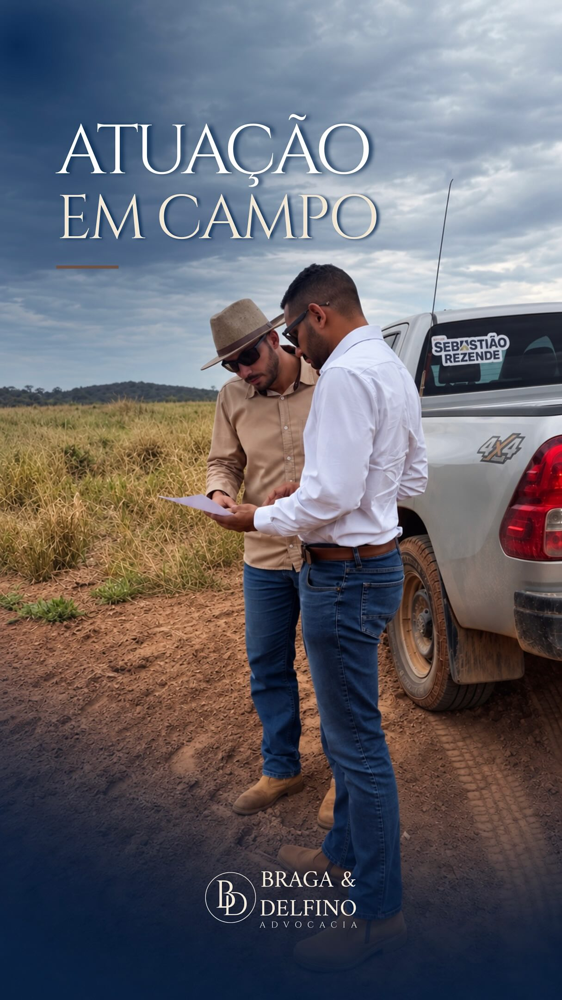
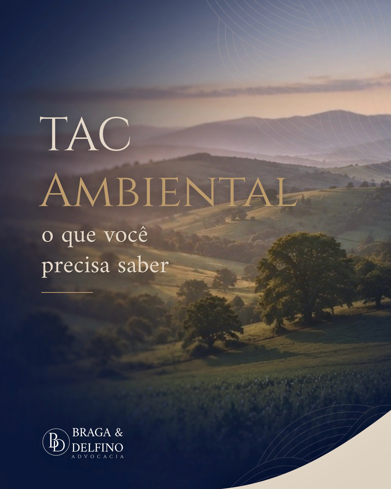

Proximidade
Conhecer de perto a terra e quem vive dela é o ponto de partida para compreender os desafios de cada contexto.
Um olhar jurídico para o campo, os negócios
e as decisões que fazem parte da sua história.
Conhecer de perto a terra e quem vive dela é o ponto de partida para compreender os desafios de cada contexto.

Direito Agrário, Empresarial e Ambiental se encontram na realidade de quem produz. Nosso olhar considera esse contexto.
Por trás de cada propriedade e de cada negócio, existe uma história. Entender suas particularidades faz parte da conversa.
Conhecimento jurídico.
Compromisso com a sua história.
O Braga & Delfino Advocacia atua nas áreas de Direito Agrário, Empresarial e Ambiental, com atenção à realidade de quem produz.
Estar perto do campo e de quem vive dele é o ponto de partida para compreender os desafios de cada contexto.
Converse com o escritórioREGULARIZAÇÃO DE IMÓVEIS
Uma conversa sobre imóveis que ainda precisam de regularização.
DIREITO AGRÁRIO
Conhecer de perto a terra e quem vive dela faz parte da atuação.

DIREITO AMBIENTAL
Um conteúdo sobre o Termo de Ajustamento de Conduta e seus compromissos.
Conteúdos de caráter informativo. Cada situação demanda uma análise jurídica individual.
Comece pelo seu contexto.
O próximo passo pode ser uma conversa.
Escolha o assunto e entre em contato pelo WhatsApp. Conte brevemente o que trouxe você até aqui.
Reúna as informações e os documentos relacionados à sua situação para conversar com o escritório.
Converse com a equipe para compreender os caminhos jurídicos conforme as particularidades do seu caso.
Você confirma o envio da mensagem no WhatsApp.